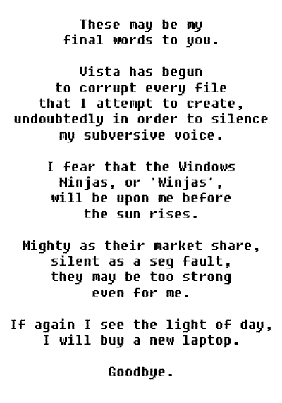

Comic JK 68
When I Feel Like It
⇤
<
?
>
⇥

⇤
<
?
>
⇥
Forum
.
RSS
.
Digg
.
Facebook
.
Reddit
.
Twitter
.
Stumbleupon
>HUR HUR I GET IT WINDOWS SUXXXXXXXXXXXX BILL GATES FUCKS THE DEVIL IN HELL >>I know he does. I have the filming rights. >>>Yeah, but Jobs was the one with the gimp mask, violently masterbating. Microsoft is evil? Why? >Not as evil as AOL >Also not as evil as Appleb >Not as evil as YOUR FACE! >>you're all wrong >>>Not as evil as black holes, they fuck wit your mind man! I was a broken man once...*sniff* back in the day whe-blah- -blah- -blah- -blah- -blah- Ben> I want to install Ubuntu I burned it on a cd but my mother is terrified because she likes windows and she is afraid of the data she stored on MY computer. (why did she do that? she has her own computer) so I will give her her damn data and install Ubuntu because windowz xp corrupted every single file I had :| > Or you could dual boot > Your mother is too technologically ignorant to be able to operate Windows, let alone Ubuntu. Be a good child and buy her a Mac. Perfect for anyone who can't/doesn't want to have control. >And have your files deleted instead of corrupted. Windows 7 corrupted a few of my C files. So I rewrote them. A week later, it automatically ran the Check Disk utility on boot because it somehow found out there were file-system problems. What did it do? Erase my C files AGAIN.